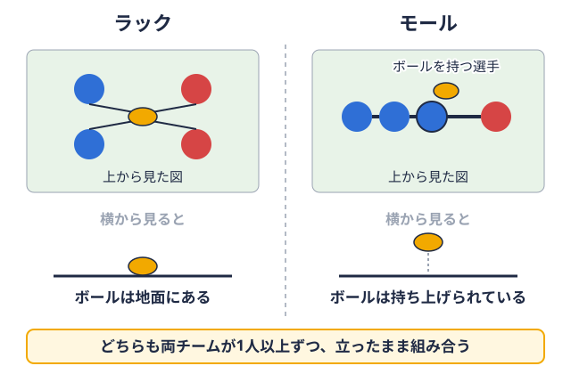

基礎知識 2026-11-26
ラグビーのオフサイドとは｜場面別の立ち位置と10メートルルール
ラグビーのオフサイドボールを持つ、または最後に触れた味方より前にいる状態でプレーに加わる反則。  用語辞典で見るは、オープンプレーでは「ボールを持っている味方、または最後にボールをプレーした味方より前にいること」が出発点です。ただし、ラック地面にあるボールの上で、両チーム1人以上が立ったまま組み合い、ボールを奪い合う状態。手は使えない。
用語辞典で見るは、オープンプレーでは「ボールを持っている味方、または最後にボールをプレーした味方より前にいること」が出発点です。ただし、ラック地面にあるボールの上で、両チーム1人以上が立ったまま組み合い、ボールを奪い合う状態。手は使えない。 用語辞典で見る・ラインアウトボールが横のライン（タッチライン）の外に出たあとの再開方法。2列に並び、投げ入れたボールを取り合う。
用語辞典で見る・ラインアウトボールが横のライン（タッチライン）の外に出たあとの再開方法。2列に並び、投げ入れたボールを取り合う。 用語辞典で見るでは、基準になる線がそれぞれ別に決まっています。「どこに立っていれば反則にならないのか」を場面ごとに整理しておくと、試合中の判断が早くなります。
用語辞典で見るでは、基準になる線がそれぞれ別に決まっています。「どこに立っていれば反則にならないのか」を場面ごとに整理しておくと、試合中の判断が早くなります。
「ハイパントを追いかけたらオフサイドを取られた」「ラックの横から入ったつもりが笛を吹かれた」。オフサイドは、競技歴が浅い部員だけでなく、経験者でも場面によって迷いやすい反則です。この記事では、ワールドラグビーの競技規則（第10条・第15条・第16条・第18条・第19条）を一次情報として、場面別に基準の線がどこに引かれるかを整理します。最後に、練習で使えるチェック項目もまとめます。
結論：基準の線は場面で変わるが、考え方は2つに分けられる
条文を読むと、オフサイドの基準は次の2つに大別できます。
- オープンプレー（第10条）：ボールを持つ味方、または最後にボールをプレーした味方が基準になる
- 密集・セットプレースクラムやラインアウトのように、プレーが止まったあと決まった形で再開する場面。用語辞典で見る（ラック・モール・スクラム・ラインアウト）：「最後尾の足」や「タッチマーク」など、場面ごとに決められた線が基準になる
まずこの2つを区別して覚え、そのうえで場面ごとの線を確認するのが、取り組みやすい順序です。なお、ここで紹介する条番号と内容は、2026年11月にワールドラグビーの公式サイト（Laws of the game）で確認した範囲の要約です。大会ごとの運用や年代別の補則は異なる場合があるため、最終的には日本ラグビーフットボール協会の競技規則一覧や、所属リーグの要項で確認してください。
オープンプレーのオフサイド（第10条）
何がオフサイドになるのか
第10.1条では、ボールを持っている味方、または最後にボールをプレーした味方より前にいる選手がオフサイドの位置にいるとされています。味方がキックした場合は、ボールを蹴った足がオフサイドラインオフサイドにならずにプレーに加われる境目の線。場面ごとに位置が決まっている。用語辞典で見るを決めます。
オフサイドの位置にいること自体と、反則を取られることは別です。オフサイドの選手が次の行為でプレーに干渉すると、罰せられる場合があります。
- ボールをプレーする
- ボールキャリアーにタックルボールを持つ相手をつかんで地面に倒すプレー。倒したあとは、すぐにボールから離れなければならない。用語辞典で見るする
- 相手が思うようにプレーするのを妨げる
- オフサイドの位置にとどまる
つまり、前にいても、プレーに関わらず、すぐに下がろうとしていれば、直ちに反則になるとは限りません。反則と判断されるのは、第10.4条にあるように、下がろうとする努力をせずプレーに干渉した場合や、ボールに向かって動いた場合などです。
罰則とオンサイドへの戻り方
オフサイドの反則では、相手チームは「反則地点でのペナルティ反則への罰。反則を受けたチームがその場から再開でき、ゴールを狙って成功すれば3点が入る。 用語辞典で見る」か「反則したチームが最後にボールをプレーした地点でのスクラム」を選べます（第10.4条）。
用語辞典で見る」か「反則したチームが最後にボールをプレーした地点でのスクラム」を選べます（第10.4条）。
オフサイドの選手がオンサイドに戻る方法は、条文では次のように整理されています。
| 戻り方 | 内容（第10.6条・第10.7条の要約） |
|---|---|
| 自分で戻る | 最後にボールをプレーした味方の後ろ、またはオンサイドの味方の後ろに移動する |
| 味方が追い越す | オンサイドの味方がオフサイドの選手を追い越す |
| 相手の動きによる | 相手がボールをキックした、またはボールに意図的に触れたが保持はしなかった |
| ボールが出る | ボールがタッチに出た（それまでに規則を守っていることが条件） |
練習で意識したいのは、「前にいる」と気づいた瞬間に、プレーに関わる前に下がる動作を入れることです。
キック後の10メートルルール（第10.4条c）
キックの場面で反則を取られやすいのが、いわゆる10メートルルールです。条文の要約は次のとおりです。
- 味方のキッカーより前にいた選手が対象になる
- キックされたボールが捕球または着地した地点から、その側の10メートルの線（または、直ちに下がるべき味方のオンサイド選手の後ろ）まで、直ちに下がらなかった場合に罰せられる
- ボールがゴールポストやクロスバーに当たった後でも適用される
- 該当する選手が複数いる場合は、ボールの捕球・着地地点に最も近い選手が罰せられる
- キックがチャージダウンされた場合、またはチャージダウンを試みた相手に触れられた場合は適用されない
見落としやすい点として、10メートルルールでオフサイドになった選手は、相手の行動ではオンサイドになりません（第10.8条）。通常のオフサイドなら、相手がボールをキックしたり、意図的に触れたりすると戻れる場合がありますが（第10.7条）、10メートルルールの場合は適用されません。条文上の例外はチャージダウンのみです。
キックを蹴った味方の前にいた選手は、ボールがどこに落ちるかを見ながら、まず下がる。この動きは、ハイボールの競り合いを練習するときにもあわせて確認できます。捕球側の動きはハイボールキャッチ練習のコツ、キックの種類はキックの種類と練習で整理しています。
ラックのオフサイド（第15条）
ラックでは、各チームのオフサイドラインは、ラックに参加している選手の最後尾の地点を通り、トライラインと平行に引かれます（第15.4条）。その地点がトライライン上、またはそれより後ろにある場合は、トライラインがオフサイドラインになります。
ラックに参加する選手には、次の条件があります。
- 立った状態で、自チームのオフサイドラインの後方から参加する（第15.5条）
- 最後尾の選手の横から入るのは可能だが、前からは入れない（第15.6条）
- 味方または相手にバインド腕を使って、味方や相手の体につかまって組むこと。スクラムやラック、モールで必要になる。用語辞典で見るする（第15.7条）
- 直ちにラックに参加するか、オフサイドラインの後方に下がる（第15.8条）
最後の「直ちに参加するか、下がる」は、部員が練習で確認しやすい項目です。条文は、参加しないなら下がることを求めているため、オフサイドラインの前でとどまり続けるのは避けたい動きです。
オープンプレーと違い、ラックでオフサイドになった選手は、プレーが終わったあともオフサイドのままです（第10.9条）。オンサイドになる条件は、直ちにオフサイドラインの後ろへ下がる、相手がボールを5メートル運ぶ、相手がボールをキックする、のいずれかです（第10.10条）。
ラックの参加の仕方や、ジャッカルのルールは、ブレイクダウンとジャッカルの練習法に詳しくまとめています。
モールのオフサイド（第16条）
モールでは、各チームのオフサイドラインは、モール参加者のうち自陣トライラインに最も近い最後尾の足を通り、トライラインと平行に引かれます（第16.4条）。
- モールに加わる選手は、オンサイドの位置から参加するか、直ちにオフサイドラインの後方に下がる（第16.5条）
- モールから離れた選手は、直ちにオフサイドラインの後方に下がる。その後の再参加は認められる（第16.6条）
- 参加するときは、モール内の最後尾の選手にバインドする（第16.7条）
2026年5月18日付で日本協会が出したモールの適用ガイドラインでも、モールに加わる際は最後尾の選手にバインドする点が示されています。詳しくはモールの組み方とコツと、2026年のルール改正の整理で確認できます。
スクラムのオフサイド（第19条）
スクラムでは、スクラムが続いている間、選手はオンサイドを保つ必要があります（第19.27条）。スクラムに参加していない選手は、自チームの最後尾の足から少なくとも5メートル後方にとどまります（第19.31条）。自チームの最後尾の足がインゴール得点ライン（トライライン）の奥にあるエリア。ここでボールを地面につけるとトライになる。 用語辞典で見る、またはトライラインから5メートル以内にある場合は、トライラインがオフサイドラインになります（第19.32条）。
用語辞典で見る、またはトライラインから5メートル以内にある場合は、トライラインがオフサイドラインになります（第19.32条）。
スクラムハーフ9番のポジション。人が固まった場所からボールを取り出し、味方へパスして攻撃を始める。 用語辞典で見るについては、次のような取り決めがあります。
用語辞典で見るについては、次のような取り決めがあります。
- 投入しない側のスクラムハーフは、プレー開始前に、センターライン上で相手のスクラムハーフの隣に立つか、最後尾の足から5メートル以上後方に立つ（第19.28条）
- ボールを保持する側のスクラムハーフは、プレー開始後、少なくとも片足をボールと同じ高さか、それより後ろに置く（第19.29条）
スクラムは、ボールがトンネル以外からスクラムの外に出た時点で終了し、オフサイドラインは適用されなくなります（第19.33条）。スクラムの組み方はスクラムの技術と練習方法、スクラムハーフの動きはスクラムハーフのパス練習を参考にしてください。
ラインアウトのオフサイド（第18条）
ラインアウトでは、ボールが投入されて選手または地面に触れるまで、参加選手のオフサイドラインはタッチマークです（第18.30条）。ボールが投入されて選手または地面に触れた後は、ボールを通る線に変わります。
参加しない選手は、ボールが投入される前、自陣側でタッチマークから10メートル以上離れるか、トライラインの方が近い場合はその後方にいる必要があります（第18.35条）。ボールが投入された後は前進できますが、ボールが15メートルラインを越えなかった場合は、直ちに自陣のオフサイドラインへ戻る必要があります（第18.36条）。
また、タッチマークを越えてジャンプして捕球できなかった選手は、直ちに自陣側へ戻らなければなりません（第18.31条）。ジャンパーラインアウトで味方に持ち上げられて跳び、投げ入れられたボールを取る選手。用語辞典で見るやリフターラインアウトで、跳ぶ選手（ジャンパー）を下から持ち上げて支える選手。用語辞典で見るの動きは、ロックの練習法やフッカーのスローイングの記事とあわせて見直せます。
場面別の早見表
ここまでの内容を、場面ごとの基準の線で整理します。
| 場面 | 基準の線 | 主な条文 |
|---|---|---|
| オープンプレー | ボールを持つ味方、または最後にプレーした味方（キックなら蹴った足） | 第10.1条 |
| キック後 | 捕球・着地地点から10メートルの線まで直ちに下がる | 第10.4条c |
| ラック | 参加者のうち最後尾の地点 | 第15.4条 |
| モール | 参加者のうち最後尾の足 | 第16.4条 |
| スクラム | 最後尾の足から5メートル後方 | 第19.31条 |
| ラインアウト | 投入前はタッチマーク、投入後はボールを通る線 | 第18.30条 |
線の引かれ方は、条文の要約で見ても場面によって異なります。細かい適用の例外は、条文の原文と審判の説明で確認してください。
練習で確認したいチェック項目
反則を減らすために、練習中にコーチや仲間と確認しやすい項目にまとめます。いずれも、チームの練習計画に合わせて使う一例です。
- キックが蹴られた瞬間、自分がキッカーの前にいたかどうかを確認しているか
- 前にいたときに、ボールの落下地点を見ながら下がる動きができているか
- ラックに入る前に、自チームのオフサイドラインの位置を意識しているか
- 参加しない場合に、立ち止まらず下がっているか
- ラインアウトで、参加しない選手が10メートル以上離れる位置を知っているか
- スクラムで、バックス背番号9〜15番の7人。ボールを受けて走り、パスやキックで攻めるのが主な役目。用語辞典で見るが最後尾の足から5メートル後方に立てているか
練習後に、取られたオフサイドを「どの場面で、どの線を越えたか」まで書き出すと、次の修正点がはっきりします。ビデオ分析の際は、反則の種類を「オープンプレー／キック後／ラック／モール／セットプレー」に分けて数える方法があります。オフサイドが、ペナルティとフリーキックのどちらで扱われるかは、反則の種類の整理で確認できます。
自チームの試合を見て、練習の優先度を決める
ラグビーマニアでは、関東・関西・九州の各協会が公開している試合結果をもとに、順位表や日程・結果を用意しています。たとえば、関東大学対抗戦Aグループの順位表や関東大学リーグ戦1部の順位表、関西Aリーグの日程・結果で、次の対戦相手の勝敗や得失点の傾向を確認できます。
ただし、順位表や得失点から、そのチームの反則の傾向やオフサイドの多さを読み取ることはできません。ここで確認できるのは、結果までです。試合映像や、レフリーとの対話で、自チームが取られやすい反則を確認する部分は別になります。
まとめ
- オープンプレーのオフサイドは、ボールを持つ味方、または最後にプレーした味方より前にいることが出発点
- キック後は、捕球・着地地点から10メートルの線まで直ちに下がる必要がある（第10.4条c）
- ラック・モール・スクラム・ラインアウトでは、場面ごとに基準の線が異なる
- オフサイドの位置にいることと、反則になることは別。ただし、とどまってプレーに干渉すると罰せられる場合がある
- 練習では、取られた場面と越えた線をセットで記録すると、修正点が見えやすい
ここで整理した内容は条文の要約です。解釈に迷う場面は、所属協会の審判窓口やコーチに確認してください。
出典
この部活・競技を応援したい方へ
取材してほしい部活を募集中
部活を続けながら、就活も進めたい方へ
体育会の学生のための就活相談です。無料で、メールアドレス・学年・所属の入力だけで始められます。